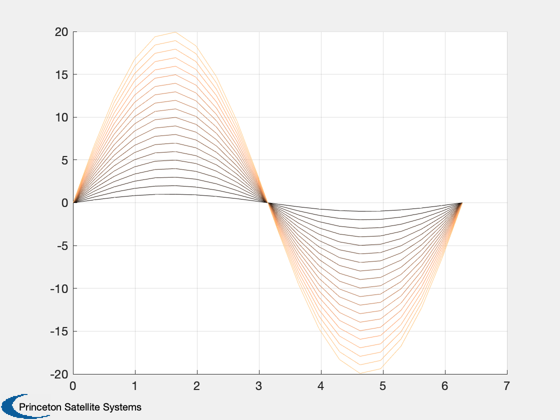

Examples of generating colors for plots
Sometime we need a set of colors for distinguishing between a group of objects in a plot, or modes, etc. The toolbox has two ways to do this, one using a hue along the colorwheel and one using a colormap.
See also Watermark, AssignColors, ColorSpread, NewFig, PlotColor
Contents
%-------------------------------------------------------------------------- % Copyright (c) 2017 Princeton Satellite Systems, Inc. % All rights reserved. %-------------------------------------------------------------------------- % Parameters for both examples n = 20; th = linspace(0,2*pi,n);
AssignColors from across the RGB spectrum
This function uses hue/saturation/brightness to get a selected number of colors from across the color wheel.
sat = 0.9; val = 0.9; colors = AssignColors( n, sat, val ); h = NewFig('AssignColors Demo'); hold on; for k = 1:n plot(th,k*sin(th),'color',colors(k,:)*val); end grid on Watermark('Princeton Satellite Systems',h);

ColorSpread from across a colormap
You can enter a colormap or use the default colormap.
map = copper; colors = ColorSpread( n, map ); h = NewFig('ColorSpread Demo'); hold on; for k = 1:n plot(th,k*sin(th),'color',colors(k,:)); end grid on Watermark('Princeton Satellite Systems',h); %-------------------------------------- % $Date$ % $Id: c67ef6befc7521cdea47e6ac0803fbe9ab1b876a $